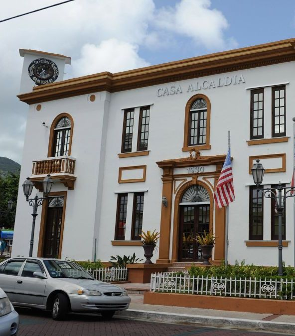

Reserva Natural Humedal Punta Tuna

Esta reserva natural se encuentra cerca del distintivo Faro Punta Tuna de Maunabo. Compuesta principalmente por humedales, la reserva de Punta Tuna cubre 1,4 millas de costa. En la reserva, encontrarás un pequeño centro de visitantes y múltiples senderos. Se pueden concertar visitas guiadas con antelación.
- Dirección: Km 4.2, PR-7760, Maunabo, 00707
Playa Los Bohíos
La playa es un encuentro íntimo con la flora y la fauna de Puerto Rico, ya que en Maunabo se encuentra gran cantidad de la biodeiversidad de nuestra isla.
Playa Los Bohíos es una playa muy popular atrayendo miles de visitantes y turistas cada año que desean y buscan explorar otras regiones más allá de San Juan y otras ciudades importantes.
Area Natural Protegida Sierra la Pandura
Esta área natural protegida abarca unas 179 cuerdas de la sierra que le da su nombre, también conocida como la Cuchilla de Pandura o La Pica, en los municipios costeros de Maunabo y Yabucoa. Este grupo de montañas baja desde la Sierra de Cayey y su origen volcánico se remonta a inyecciones de magma del interior de la corteza terrestre de unos 90 millones de años de antigüedad.
Pueden visitar en:
- Dirección: 23J4+Q5W, PR-759, Maunabo 00707
Plaza de Recreo de Maunabo
Plaza de Recreo de Maunabo ha servido como refugio para todos los ciudadanos de este municipio por muchísimos años. Es un lugar hermoso y lleno de diversión.
Pueden visitar en:
- Dirección: 2433+24F, PR-760, Maunabo, 00707